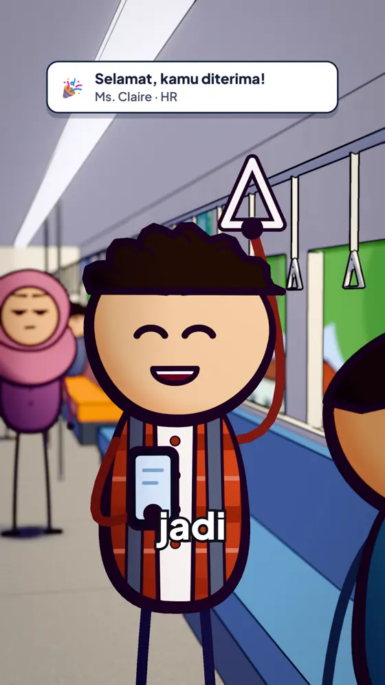
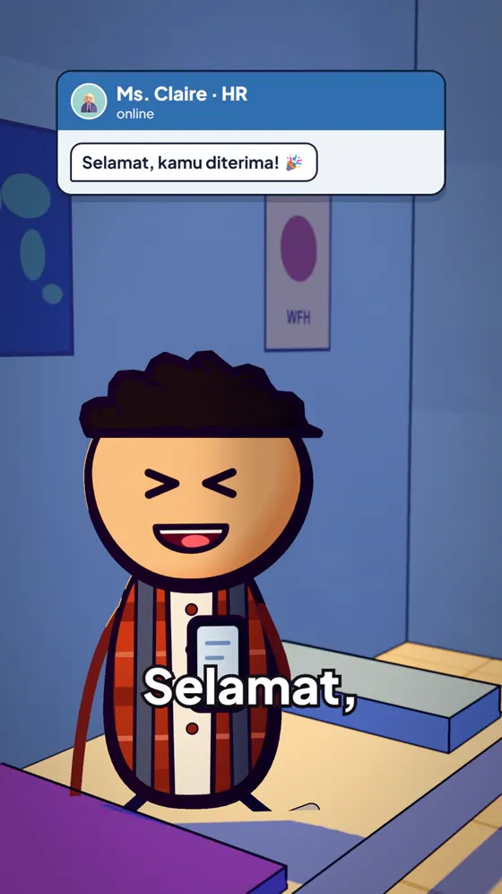
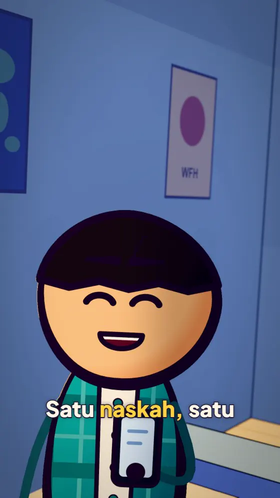

Bikin video animasi 3D sendiri dengan Claude Code, tanpa Blender
Kamu menulis naskah dan merekam suara. Claude Code menulis kodenya. Laptop merendernya. Panduan lengkap dari instalasi sampai file MP4 2K siap diunggah ke Reels, TikTok, dan Shorts.
Ebook PDF diunduh dari Member Area Lynk.id setelah pembayaran. Tanpa langganan dari saya.


Video 3D tanpa software 3D dan tanpa klik di timeline
Software 3D butuh bertahun-tahun belajar. Cara ini memindahkan pekerjaan beratnya ke kode yang ditulis Claude Code atas arahanmu.
Tulis naskah & rekam suara
Sekitar 60–65 kata untuk 30 detik. Pakai ElevenLabs atau suaramu sendiri.
Claude Code menulis kodenya
Tokoh, ruangan, kamera, dan caption menempel pada kata di naskah. Ganti naskah, film menyusun ulang dirinya.
Satu perintah jadi MP4 2K
Sinkron kata, musik, SFX, dan render berjalan otomatis lewat satu skrip.
Peta lengkap 8 langkah (klik untuk melihat siapa mengerjakan apa)
Frame dari video yang dibuat dengan metode ini
Ini cuplikan dari seri video saya sendiri, bukan mockup. Klik gambar untuk memperbesar.
Gaya hasil: kartun sederhana (tokoh 2D di dunia 3D dengan garis tinta), bukan animasi film studio besar.
Semua yang kamu butuhkan untuk video pertama
Ebook PDF: 13 bab, 23 halaman
Bab 1–2 · Peta alur, hardware & biaya
Diagram 8 langkah dan angka nyata: spek laptop uji, waktu render yang diukur, tiga tingkat komputer (yang diuji dan yang belum), tabel biaya bulanan.
Bab 3 · Instalasi Windows langkah demi langkah
Node.js, Python, ffmpeg, Chrome, Git Bash, faster-whisper, dan Claude Code, masing-masing dengan perintah "cek" untuk memastikan berhasil.
Bab 4–5 · Dunia 3D kartun & template starter
Kosakata yang perlu kamu tahu (set, kamera, cahaya, tinta, blur) dan cara menjalankan film pertama dari template.
Bab 6 · Bekerja dengan Claude Code & skill
Cara menulis prompt yang spesifik, siklus kerja gambar diam → periksa → render, dan cara memasang skill.
Bab 7–8 · Naskah, suara, sinkron, render
Rumus naskah 30 detik, merekam suara, penjelasan empat tahap finish.sh, aturan mix audio.
Bab 9 · Studi kasus video "Diterima Lewat Chat"
Dari ide sampai MP4 pada video nyata, termasuk pelajaran dari seri (episode awal 84 detik dipangkas jadi ±30 detik).
Bab 10–13 · Troubleshooting, lisensi, rencana 7 hari, Notion
Tabel masalah nyata dan solusinya, lisensi dan etika konten, rencana 7 hari, serta cara memasang skill dan mengimpor halaman "Mulai di Sini" ke Notion.
Template & skill
- Template starter three.js + Remotion, sudah diuji dari ekstrak baru
- Tokoh, ruangan, kamera, caption kata demi kata
- Musik dan SFX sintetis, tanpa sampel berlisensi pihak ketiga
- Skill Claude Code
studio-kartun-3d - Pustaka 10 prompt siap pakai
- Halaman "Mulai di Sini" (bisa diimpor ke Notion)
Template, skill, dan halaman "Mulai di Sini" diunduh lewat tautan Google Drive yang ada di dalam ebook.

Hasil template starter yang kamu dapat.
Kebutuhan laptop, waktu render, dan biaya bikin video 3D
Empat alat kecil untuk menjawab keraguan yang paling sering muncul. Semua berdasarkan angka yang saya ukur, bukan janji.
Laptop uji: Intel i7-12650H, RAM 16 GB, RTX 2050 4 GB, Windows 11. Selain itu hasilnya adalah perkiraan.
Dihitung lurus dari satu pengukuran: film 10,3 detik = 541 detik. Adegan yang lebih ramai lebih lambat, komputer lain bisa berbeda. Kamu selalu bisa memeriksa dengan gambar diam (±2,4 detik per frame) sebelum render penuh.
Harga langganan pihak ketiga berubah dan dicek saya per 23 Nov 2026 dari pencarian web, bukan dari halaman billing. Cek di situs resminya sebelum berlangganan. Panduan ini sekali bayar Rp149.000 dan tidak termasuk langganan itu.
Kecepatan 2,2 kata/detik adalah kecepatan bicara saya; ukur kecepatanmu sendiri. Naskahmu tidak dikirim ke mana pun, semua dihitung di browsermu.
Cocok untuk
- Kreator konten pemula yang ingin video kartun 3D sendiri
- Pemilik produk digital yang butuh video promosi tanpa menyewa animator
- Yang sabar membaca pesan error dan memeriksa gambar hasil
Kurang cocok untuk
- Yang mencari aplikasi sekali klik tanpa menyentuh terminal
- Komputer yang tidak lancar menjalankan Chrome
- Yang berharap hasil seperti film animasi studio besar
Satu harga, tanpa langganan tambahan dari saya
sekali bayar
- Ebook PDF 23 halaman (13 bab)
- Template starter + skill Claude Code
- Pustaka 10 prompt + halaman "Mulai di Sini"
- Diunduh dari Member Area Lynk.id; template lewat tautan Drive di ebook
Pembayaran diproses di Lynk.id. Biaya Claude (±US$20/bulan) dan ElevenLabs (opsional) dibayar langsung ke penyedianya.
FAQ tentang bikin video animasi 3D dengan Claude Code
Perlu bisa coding?
Tidak. Kamu tidak menulis kode sendiri, tapi perlu mau membaca pesan error, melihat gambar hasil, dan memberi umpan balik yang spesifik ke Claude Code. Itu keterampilan utamanya.
Apakah harus langganan Claude?
Ya, Claude Code membutuhkan langganan Claude berbayar (±US$20/bulan untuk paket Pro per 23 Nov 2026). Cek harga terbaru di situs resminya.
Laptopku cukup kuat?
Contoh di panduan memakai laptop i7 generasi 12, RAM 16 GB, GPU 4 GB: film 10 detik 2K dirender ±9 menit. Spek lebih rendah seharusnya bisa jalan tapi belum saya uji dan renderingnya lebih lama. Coba alat "Laptopku cukup?" di atas.
Bisa di Mac atau Linux?
Panduan dan template diuji di Windows 11. Mac dan Linux belum diuji, jadi saya tidak menjanjikannya.
Apakah ada video tutorial?
Belum. Paket ini berupa ebook tertulis lengkap dengan langkah dan studi kasus, template, skill, dan prompt.
Bagaimana cara mengunduh setelah membeli?
Ebook PDF diunduh dari Member Area Lynk.id setelah pembayaran. Template, skill, dan halaman "Mulai di Sini" diunduh lewat tautan Google Drive yang ada di dalam ebook (Bab 13).
Boleh dipakai untuk konten komersial?
Template boleh dipakai untuk videomu sendiri. Pastikan lisensi layanan pihak ketiga (Remotion, ElevenLabs, dan lainnya) sesuai pemakaianmu. Ringkasannya ada di Bab 11 ebook; Remotion, misalnya, gratis untuk individu dan tim sampai 3 orang.
Apa bedanya dengan belajar Blender?
Blender mengajarkan pemodelan 3D secara manual dan butuh waktu belajar yang panjang. Metode di sini menghasilkan gaya kartun sederhana lewat kode yang diarahkan Claude Code, sehingga yang kamu pelajari adalah menulis naskah, memberi arahan, dan memeriksa hasil.
Satu naskah. Satu suara. Satu perintah.
Ebook, template, skill, dan prompt dalam satu paket Rp149.000.